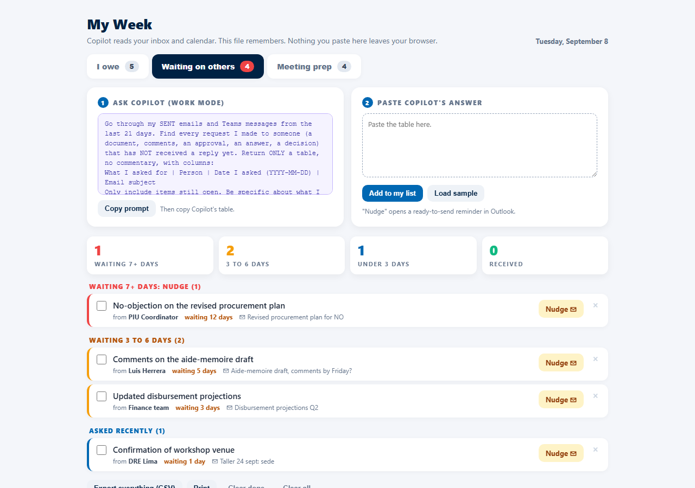
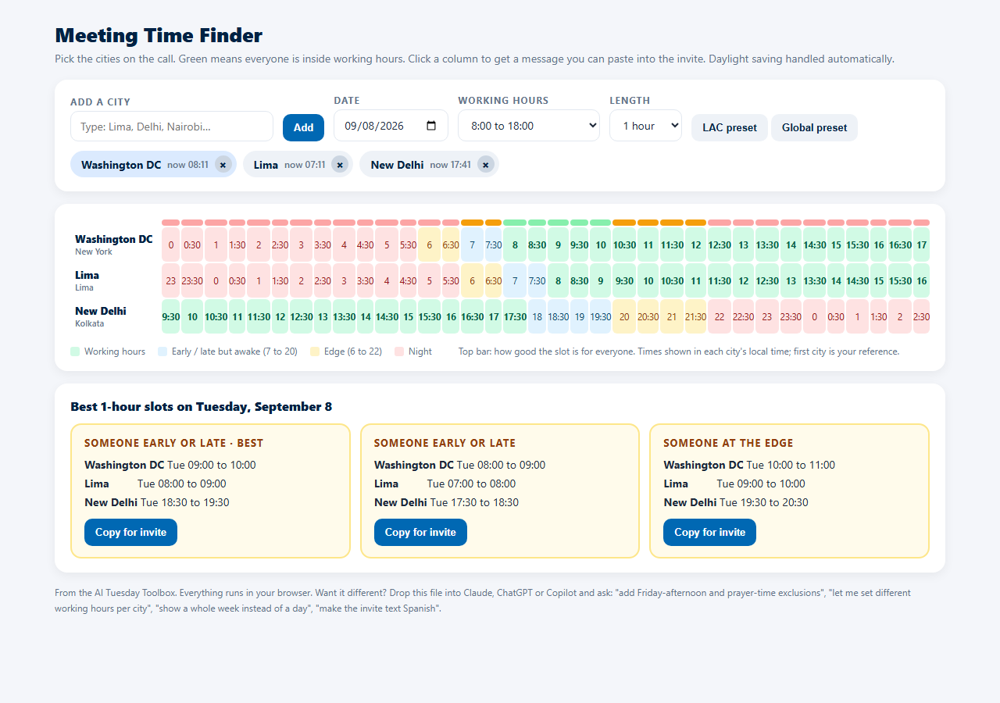
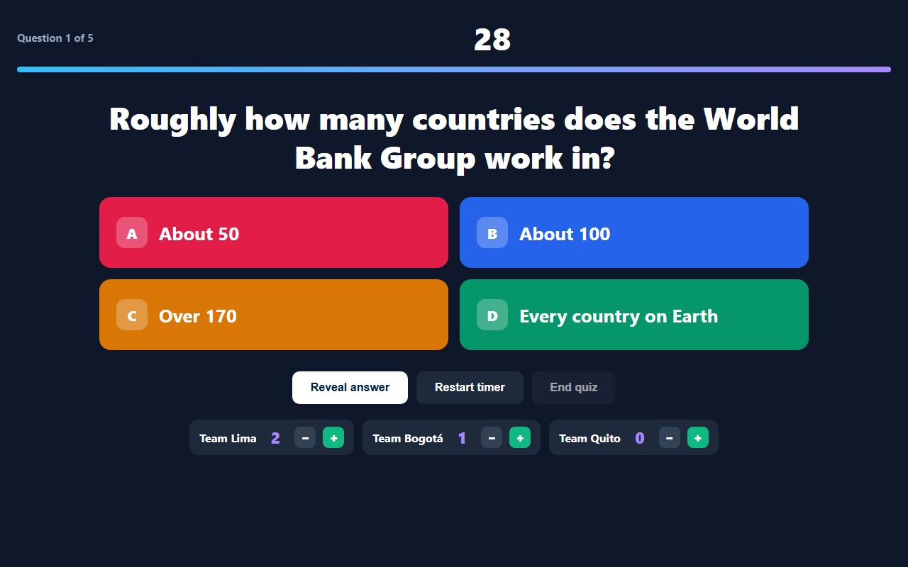

Ready to use, no install, no account, no IT ticket. Each one is a single web file: open it in any browser, on any device. Nothing you type leaves your computer. Where a tool needs reading or thinking (your inbox, your calendar, quiz questions), it hands you a prompt for Copilot and takes the answer back.

Three tabs. I owe: everything people expect from you, sorted overdue / today / this week. Waiting on others: what you asked and never got back, with a one-click Nudge that opens a polite reminder in Outlook. Meeting prep: what each meeting this week needs from you, due the day before. Copilot reads; the file remembers.
Open My Week
Pick the cities on the call (DC, Lima, Delhi, Nairobi, 90 to choose from). One glance shows where everyone is inside working hours, with daylight saving handled. It proposes the three best slots and copies a ready-to-paste line with every city's local time for the invite.
Open Meeting Time Finder
A live quiz on the projector. Big text, 30-second timer, reveal, team scoreboard, podium. No accounts, no wifi, no app for participants. Copy the built-in prompt, and Copilot writes the questions about your topic in the right format.
Open Workshop QuizYou don't need to know how these files work. Drag the file into Claude, ChatGPT, Gemini or Copilot and say what you want in plain English. It returns a new file. Examples that work:
Make it SpanishIn My Week, add a fourth tab called "Promised to counterparts"In the time finder, add a whole-week view and exclude Friday afternoonsIn the quiz, play a sound when the timer hits zero and show the fun fact in bigger textMake it work as an icon on my phone's home screenWant a tool that doesn't exist yet? Describe it the same way: Build a single self-contained HTML file that ... Inputs are ... It should show ... Save everything in the browser. Works on a phone.